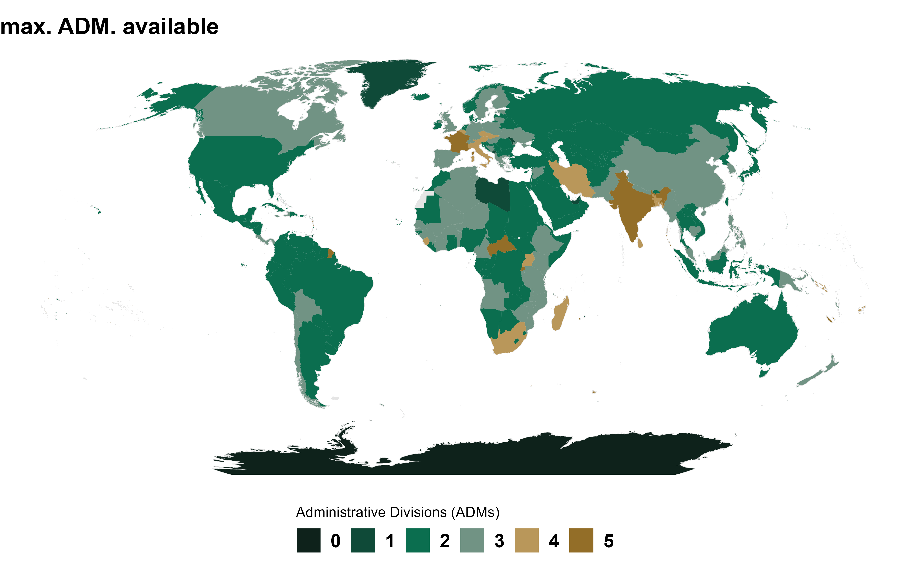

Skip to contents
rgeoboundaries
1.9.9.9000
Get started
Reference
Articles
gbOpen coverage and metadata
gbHumanitarian coverage and metadata
gbAuthoritative coverage and metadata
Changelog
gbOpen coverage and metadata
Source:
vignettes/articles/x1_gbOpen.Rmd
x1_gbOpen.Rmd
gbOpen coverage

gbOpen metadata